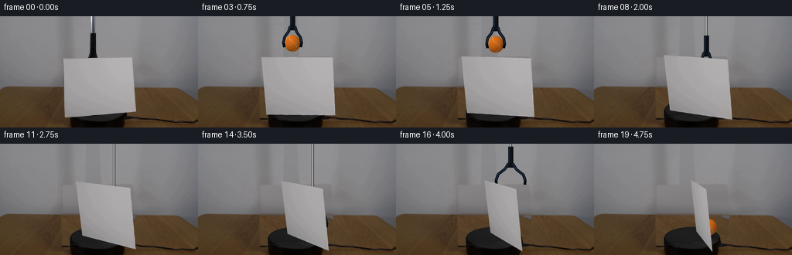
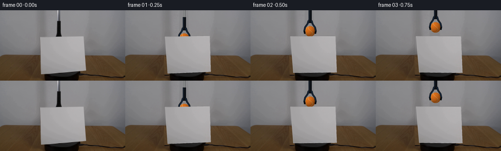

候选 01 · 2026-11-08T20:58:31.525681+00:00 · 点开播放与检查图
inspection.png

transition_check.png

代码变化
--- 上一保存版本
+++ 本次保存版本
@@ -0,0 +1,198 @@
+from pathlib import Path
+import numpy as np
+from PIL import Image, ImageDraw, ImageFilter
+import cv2
+from scipy.optimize import least_squares
+from scipy.ndimage import gaussian_filter
+import artifact_io
+
+ROOT=Path(__file__).resolve().parent
+W,H=256,144
+S=4
+im=np.array(Image.open(ROOT/'first_frame.png').convert('RGB'))
+rng=np.random.default_rng(208)
+# The calibrated, oblique rectangle of the real sheet.
+Q=np.array([[81.8,54.7],[170.8,53.1],[175.2,123.2],[83.7,130.9]],np.float32)
+
+def project(X,Y,Z,p):
+ D,theta,cx,cy,alpha,lx,lz=p
+ den=D-np.sin(alpha)*Y-np.cos(alpha)*Z
+ return np.stack([cx+420*X/den,cy-420*(np.cos(alpha)*Y-np.sin(alpha)*Z)/den],-1)
+uv=np.array([[-1,1.65],[1,1.65],[1,0],[-1,0]])
+def corners(p,delta=0):
+ D,theta,cx,cy,alpha,lx,lz=p
+ a=theta+delta
+ u,v=uv.T
+ X=(u+lx*v)*np.cos(a)+(0.22+lz*v)*np.sin(a)
+ Z=(u+lx*v)*np.sin(a)+(0.22+lz*v)*np.cos(a)
+ return project(X,v,Z,p)
+p0=[9.6,-.26,125,123,.31,0,-.2]
+p=least_squares(lambda p:(corners(p)-Q).ravel(),p0,bounds=([7,-.7,115,110,.1,-.4,-.8],[14,0,140,140,.7,.4,.3])).x
+print('calibration',p,'error',np.max(abs(corners(p)-Q)))
+
+# Reconstruct only the part of the fixed wall, table and turntable that is hidden.
+yy,xx=np.mgrid[:H,:W]
+clean=im.astype(float).copy()
+wall=clean.copy()
+for y in range(96):
+ l=im[max(0,y-2):min(H,y+3),68:77].mean((0,1))
+ r=im[max(0,y-2):min(H,y+3),180:190].mean((0,1))
+ f=np.clip((np.arange(W)-75)/108,0,1)[:,None]
+ wall[y]=l[None]*(1-f)+r[None]*f
+wall+=rng.normal(0,.35,(H,W,1))
+clean[:93]=wall[:93]
+# Texture taken from the same tabletop, continued across its hidden center.
+for y in range(93,H):
+ for x in range(70,183):
+ sx=int(181+(x-70)*.55)
+ sy=y
+ clean[y,x]=im[sy,min(251,sx)]
+# make the table's narrow rear edge consistent
+for y in range(91,96):
+ amount=np.clip((y-91.3)/2,0,1)
+ clean[y,70:184]=wall[y,70:184]*(1-amount)+clean[max(y,94),70:184]*amount
+base=Image.fromarray(np.uint8(np.clip(clean,0,255))).resize((W*S,H*S),Image.Resampling.BICUBIC)
+# Dark circular powered platform; only its previously hidden cap needs reconstruction.
+Y,X=np.mgrid[:H*S,:W*S]/S
+rad=((X-126.7)/36.4)**2+((Y-121.5)/14.1)**2
+plat=np.zeros((H*S,W*S,4),np.uint8)
+side=(abs(X-126.7)<36.4)&(Y>=121.5)&(Y<=148)
+sideval=9+4*np.exp(-((X-114)/23)**2)
+for k in range(3):plat[:,:,k]=np.clip(sideval,0,255)
+plat[:,:,3]=side*255
+base=Image.alpha_composite(base.convert('RGBA'),Image.fromarray(plat))
+cap=np.zeros_like(plat)
+val=26.2+3.8*(1-np.clip(rad,0,1))-3.5*(Y-121.5)/14.1
+for k in range(3):cap[:,:,k]=np.clip(val+(k==0)*.2,0,255)
+cap[:,:,3]=np.clip((1-rad)*S*7,0,1)*255
+base=Image.alpha_composite(base,Image.fromarray(cap))
+d=ImageDraw.Draw(base)
+d.arc((90.3*S,107.4*S,163.1*S,135.6*S),0,180,fill=(12,12,11),width=2*S)
+# Original pixels stay intact everywhere else.
+mask=Image.new('L',(W*S,H*S));dm=ImageDraw.Draw(mask)
+dm.polygon([(int(x*S),int(y*S)) for x,y in Q],fill=255)
+dm.line([(int(x*S),int(y*S)) for x,y in list(Q)+[Q[0]]],fill=255,width=3*S)
+dm.polygon([(111*S,0),(128*S,0),(131*S,55*S),(110*S,56*S)],fill=255)
+# Small shadow directly along the original sheet boundary.
+dm.polygon([(79*S,90*S),(85*S,91*S),(90*S,136*S),(80*S,134*S)],fill=255)
+mask=mask.filter(ImageFilter.GaussianBlur(.65*S))
+orig=Image.fromarray(im).resize((W*S,H*S),Image.Resampling.BICUBIC).convert('RGBA')
+base=Image.composite(base,orig,mask)
+base.save(ROOT/'.tmp/clean.png')
+# Rectification preserves the actual paper texture rather than making a flat icon.
+TW,TH=420,360
+rect=np.float32([[0,0],[TW-1,0],[TW-1,TH-1],[0,TH-1]])
+tex=cv2.warpPerspective(im,cv2.getPerspectiveTransform(Q,rect),(TW,TH),flags=cv2.INTER_CUBIC,borderMode=cv2.BORDER_REPLICATE)
+# Remove subpixel border contamination while retaining the photographed interior.
+tex[:3]=tex[3];tex[-4:]=tex[-5];tex[:,:3]=tex[:,3:4];tex[:,-4:]=tex[:,-5:-4]
+
+# Generate a fixed material texture on the ball and map it to a shaded sphere.
+noise=rng.normal(0,1,(400,800))
+noise=gaussian_filter(noise,.5)
+
+def ball_layer(cx,cy,r):
+ layer=np.zeros((H*S,W*S,4),np.uint8)
+ x0=max(0,int((cx-r-2)*S));x1=min(W*S,int((cx+r+2)*S)+1)
+ y0=max(0,int((cy-r-2)*S));y1=min(H*S,int((cy+r+2)*S)+1)
+ y,x=np.mgrid[y0:y1,x0:x1]/S
+ nx=(x-cx)/r;ny=(y-cy)/r
+ rr=nx*nx+ny*ny
+ nz=np.sqrt(np.maximum(0,1-rr))
+ light=np.clip(-.43*nx-.6*ny+.67*nz,0,1)
+ shade=.61+.40*light
+ col=np.array([220,112,27])[None,None,:]*shade[:,:,None]
+ # Felt texture anchored in spherical coordinates.
+ lon=np.arctan2(nx,nz);lat=np.arcsin(np.clip(ny,-1,1))
+ tx=np.clip(((lon+np.pi)/(2*np.pi)*799).astype(int),0,799)
+ ty=np.clip(((lat+np.pi/2)/np.pi*399).astype(int),0,399)
+ felt=noise[ty,tx]
+ col+=felt[:,:,None]*6
+ # Pale interlocking curved seams, with a thin recessed rim.
+ seamcoord=nx-.43*np.sin(2.9*ny+.42)-.08*nz
+ seam=np.exp(-(seamcoord/.040)**2)
+ seam2=np.exp(-((nx+.75+.14*np.cos(ny*3.4))/.038)**2)
+ seam=np.clip(seam+seam2,0,1)
+ seamcol=np.array([213,188,132])*shade[:,:,None]
+ col=col*(1-seam[:,:,None]*.84)+seamcol*(seam[:,:,None]*.84)
+ alpha=np.clip((1-np.sqrt(rr))*r*S+0.5,0,1)
+ layer[y0:y1,x0:x1,:3]=np.uint8(np.clip(col,0,255))
+ layer[y0:y1,x0:x1,3]=np.uint8(alpha*255)
+ return Image.fromarray(layer)
+
+def draw_tool(cx,cy,opening=0):
+ # Long silver shaft, dark blue moulded neck and rubber claw fingers.
+ layer=Image.new('RGBA',(W*S,H*S))
+ d=ImageDraw.Draw(layer)
+ def poly(pts,c):d.polygon([(round(x*S),round(y*S)) for x,y in pts],fill=c)
+ def line(pts,c,width):d.line([(round(x*S),round(y*S)) for x,y in pts],fill=c,width=max(1,round(width*S)),joint='curve')
+ top=cy-44
+ # Cylindrical shaft has a narrow specular stripe, exactly as in the input.
+ for xoffset,c in [(-1.4,(65,66,65,255)),(-.9,(151,153,151,255)),(-.35,(211,213,211,255)),(.25,(149,152,150,255)),(.85,(78,81,81,255)),(1.4,(47,50,51,255))]:
+ line([(cx+xoffset,-10),(cx+xoffset,top+1)],c,.58)
+ poly([(cx-3.1,top),(cx+3.6,top),(cx+3.6,cy-24),(cx+5.1,cy-17),(cx-4.9,cy-17),(cx-3.1,cy-25)],(13,17,22,255))
+ poly([(cx-2.7,top+.9),(cx-.8,top+1),(cx-1,cy-24),(cx-3,cy-20)],(24,32,43,255))
+ line([(cx+2.8,top+1),(cx+2.8,cy-24)],(7,10,15,255),.6)
+ for sign in [-1,1]:
+ q=opening
+ pts=[(cx+sign*2.9,cy-22),(cx+sign*(5.2+q*2),cy-15),(cx+sign*(10.3+q*6),cy-8),(cx+sign*(11.7+q*7),cy-.7),(cx+sign*(10.4+q*8),cy+5)]
+ line(pts,(9,12,15,255),3.6)
+ line(pts[:-1],(23,39,59,255),1.9)
+ line([(x-sign*.35,y-.15) for x,y in pts[1:3]],(35,54,76,255),.5)
+ return layer
+
+def sheet(layer,delta):
+ q=corners(p,delta).astype(np.float32)
+ # Brightness changes continuously as the illuminated face turns away.
+ factor=1-.055*(np.sin(delta))**2
+ texture=np.uint8(np.clip(tex.astype(float)*factor,0,255))
+ h=cv2.getPerspectiveTransform(rect,q*S)
+ warped=cv2.warpPerspective(texture,h,(W*S,H*S),flags=cv2.INTER_CUBIC,borderMode=cv2.BORDER_REPLICATE)
+ alpha=Image.new('L',(W*S,H*S));dd=ImageDraw.Draw(alpha)
+ dd.polygon([(round(x*S),round(y*S)) for x,y in q],fill=255)
+ alpha=alpha.filter(ImageFilter.GaussianBlur(.15*S))
+ rgba=Image.fromarray(warped).convert('RGBA');rgba.putalpha(alpha)
+ layer=Image.alpha_composite(layer,rgba)
+ # Hairline thickness of the cardstock, not an outlined graphic.
+ d=ImageDraw.Draw(layer)
+ d.line([(round(q[0,0]*S),round(q[0,1]*S)),(round(q[3,0]*S),round(q[3,1]*S))],fill=(155,155,153,255),width=1)
+ return layer,q
+
+def smooth(t):return t*t*(3-2*t)
+def interp(t,knots):
+ for j in range(len(knots)-1):
+ a,v=knots[j];b,w=knots[j+1]
+ if t<=b:
+ z=smooth(np.clip((t-a)/(b-a),0,1));return np.array(v)*(1-z)+np.array(w)*z
+ return np.array(knots[-1][1])
+
+frames=[im]
+for i in range(1,20):
+ t=i/4
+ delta=np.deg2rad(89.5*(t/4.75))
+ # The same grabber briefly raises its held ball over the screen, then lowers it.
+ pos=interp(t,[(0,(120,66)),(.75,(122,35)),(1.15,(128,35)),(2.0,(145,69)),(3.1,(148,108)),(4.75,(148,108))])
+ cx,cy=pos
+ release=3.12
+ toolcy=cy
+ opening=0
+ if t>release:
+ opening=np.clip((t-release)/.4,0,1)
+ toolcy=interp(t,[(release,(108,)),(3.5,(103,)),(4.6,(-25,)),(4.75,(-42,))])[0]
+ layer=base.copy()
+ # Soft contact and cast shadows are behind the solid objects.
+ sh=Image.new('RGBA',layer.size);dr=ImageDraw.Draw(sh)
+ height=max(0,108-cy)
+ a=int(68*np.exp(-height/22))
+ ry=2.0+height*.035;rx=10+height*.07
+ dr.ellipse(((cx-rx+1)*S,(119-ry)*S,(cx+rx+1)*S,(119+ry)*S),fill=(0,0,0,a))
+ sh=sh.filter(ImageFilter.GaussianBlur((1.2+height*.015)*S))
+ layer=Image.alpha_composite(layer,sh)
+ # Grabber fingers encompass the orange felt sphere.
+ layer=Image.alpha_composite(layer,ball_layer(cx,cy,10.8))
+ layer=Image.alpha_composite(layer,draw_tool(cx,toolcy,opening))
+ layer,q=sheet(layer,delta)
+ out=np.array(layer.convert('RGB').resize((W,H),Image.Resampling.LANCZOS))
+ frames.append(out)
+frames=np.array(frames,np.uint8)
+artifact_io.save(frames,ROOT)
+print('saved',frames.shape)
候选 02 · 2026-11-08T21:03:01.174046+00:00 · 点开播放与检查图
inspection.png

transition_check.png

代码变化
--- 上一保存版本
+++ 本次保存版本
@@ -30,55 +30,98 @@
p=least_squares(lambda p:(corners(p)-Q).ravel(),p0,bounds=([7,-.7,115,110,.1,-.4,-.8],[14,0,140,140,.7,.4,.3])).x
print('calibration',p,'error',np.max(abs(corners(p)-Q)))
-# Reconstruct only the part of the fixed wall, table and turntable that is hidden.
-yy,xx=np.mgrid[:H,:W]
-clean=im.astype(float).copy()
-wall=clean.copy()
-for y in range(96):
- l=im[max(0,y-2):min(H,y+3),68:77].mean((0,1))
- r=im[max(0,y-2):min(H,y+3),180:190].mean((0,1))
- f=np.clip((np.arange(W)-75)/108,0,1)[:,None]
- wall[y]=l[None]*(1-f)+r[None]*f
-wall+=rng.normal(0,.35,(H,W,1))
-clean[:93]=wall[:93]
-# Texture taken from the same tabletop, continued across its hidden center.
-for y in range(93,H):
- for x in range(70,183):
- sx=int(181+(x-70)*.55)
- sy=y
- clean[y,x]=im[sy,min(251,sx)]
-# make the table's narrow rear edge consistent
-for y in range(91,96):
- amount=np.clip((y-91.3)/2,0,1)
- clean[y,70:184]=wall[y,70:184]*(1-amount)+clean[max(y,94),70:184]*amount
-base=Image.fromarray(np.uint8(np.clip(clean,0,255))).resize((W*S,H*S),Image.Resampling.BICUBIC)
-# Dark circular powered platform; only its previously hidden cap needs reconstruction.
+# Reconstruct the occluded area from the image's own boundary colors and wood.
+from scipy.sparse import lil_matrix
+from scipy.sparse.linalg import spsolve
+hole=Image.new('L',(W,H));hd=ImageDraw.Draw(hole)
+hd.polygon([tuple(z) for z in Q],fill=255)
+hd.line([(120,0),(120,56)],fill=255,width=12)
+hole=np.array(hole.filter(ImageFilter.MaxFilter(11)))>0
+wallmask=hole.copy();wallmask[92:]=False
+source=im.astype(float).copy()
+# A virtual boundary below the reconstructed wall follows the real back edge.
+for y in [91,92]:
+ for x in range(75,182):
+ f=(x-75)/107
+ source[y,x]=im[89,74:78].mean(0)*(1-f)+im[90,181:185].mean(0)*f
+coords=np.argwhere(wallmask);ids=np.full((H,W),-1,int)
+ids[wallmask]=np.arange(len(coords))
+A=lil_matrix((len(coords),len(coords)));rhs=np.zeros((len(coords),3))
+for k,(y,x) in enumerate(coords):
+ n=0
+ for dy,dx in [(0,1),(0,-1),(1,0),(-1,0)]:
+ yn,xn=y+dy,x+dx
+ if 0<=yn<H and 0<=xn<W:
+ n+=1
+ j=ids[yn,xn]
+ if j>=0:A[k,j]=-1
+ else:rhs[k]+=source[yn,xn]
+ A[k,k]=n
+source[wallmask]=spsolve(A.tocsr(),rhs)
+source[wallmask]+=rng.normal(0,.27,(len(coords),1))
+# A clean stretch of grain on the right provides texture, with low-frequency
+# color matched to the two sides of the occluded tabletop.
+for y in range(92,H):
+ for x in range(74,185):
+ sx=int(185+(x-74)*.32)
+ sy=min(127,max(94,y))
+ c=im[sy,sx].astype(float)
+ f=np.clip((x-78)/103,0,1)
+ l=im[max(94,min(y,127)),72:78].mean(0)
+ r=im[max(94,min(y,127)),181:187].mean(0)
+ donor=im[sy,185:224].mean(0)
+ c+= (l*(1-f)+r*f-donor)*.8
+ # Antialiased rear edge between tabletop and plaster wall.
+ edge=91.5+.012*(x-78)
+ blend=np.clip(y-edge+.5,0,1)
+ wc=source[91,x]
+ source[y,x]=c*blend+wc*(1-blend)
+base=Image.fromarray(np.uint8(np.clip(source,0,255))).resize((W*S,H*S),Image.Resampling.BICUBIC).convert('RGBA')
Y,X=np.mgrid[:H*S,:W*S]/S
-rad=((X-126.7)/36.4)**2+((Y-121.5)/14.1)**2
+rad=((X-126.7)/36.4)**2+((Y-118.65)/16.85)**2
plat=np.zeros((H*S,W*S,4),np.uint8)
-side=(abs(X-126.7)<36.4)&(Y>=121.5)&(Y<=148)
-sideval=9+4*np.exp(-((X-114)/23)**2)
-for k in range(3):plat[:,:,k]=np.clip(sideval,0,255)
+side=(abs(X-126.7)<36.4)&(Y>=118.65)&(Y<=148)
+sideval=7+6*np.exp(-((X-106)/22)**2)
+for k in range(3):plat[:,:,k]=np.clip(sideval-(k)*1.2,0,255)
plat[:,:,3]=side*255
-base=Image.alpha_composite(base.convert('RGBA'),Image.fromarray(plat))
+base=Image.alpha_composite(base,Image.fromarray(plat))
cap=np.zeros_like(plat)
-val=26.2+3.8*(1-np.clip(rad,0,1))-3.5*(Y-121.5)/14.1
-for k in range(3):cap[:,:,k]=np.clip(val+(k==0)*.2,0,255)
+val=31.4+3.2*(X-126.7)/36-1.1*(Y-118.65)/17
+val+=rng.normal(0,.2,val.shape)
+for k in range(3):cap[:,:,k]=np.clip(val,0,255)
cap[:,:,3]=np.clip((1-rad)*S*7,0,1)*255
base=Image.alpha_composite(base,Image.fromarray(cap))
-d=ImageDraw.Draw(base)
-d.arc((90.3*S,107.4*S,163.1*S,135.6*S),0,180,fill=(12,12,11),width=2*S)
-# Original pixels stay intact everywhere else.
+orig=Image.fromarray(im).resize((W*S,H*S),Image.Resampling.BICUBIC).convert('RGBA')
mask=Image.new('L',(W*S,H*S));dm=ImageDraw.Draw(mask)
dm.polygon([(int(x*S),int(y*S)) for x,y in Q],fill=255)
-dm.line([(int(x*S),int(y*S)) for x,y in list(Q)+[Q[0]]],fill=255,width=3*S)
-dm.polygon([(111*S,0),(128*S,0),(131*S,55*S),(110*S,56*S)],fill=255)
-# Small shadow directly along the original sheet boundary.
-dm.polygon([(79*S,90*S),(85*S,91*S),(90*S,136*S),(80*S,134*S)],fill=255)
-mask=mask.filter(ImageFilter.GaussianBlur(.65*S))
-orig=Image.fromarray(im).resize((W*S,H*S),Image.Resampling.BICUBIC).convert('RGBA')
+# Sufficient overlap removes the real edge without leaving a white ghost.
+mask=mask.filter(ImageFilter.MaxFilter(2*4*S+1)).filter(ImageFilter.GaussianBlur(1.25*S))
+# The wall solution already matches its boundary: no extra feather needed.
+ma=np.array(mask)
+ma[:92*S]=np.repeat(np.repeat(wallmask[:92].astype(np.uint8)*255,S,0),S,1)
+# Preserve the original visible platform, particularly the front rim.
+for y in range(131*S,H*S):
+ ma[y,94*S:]=0
+mask=Image.fromarray(ma)
base=Image.composite(base,orig,mask)
base.save(ROOT/'.tmp/clean.png')
+
+# Back-project the original slightly curled sheet corners onto a plane.
+# Rotating those 3D points keeps the initial perspective exactly registered.
+def original_3d():
+ D,theta,cx,cy,alpha,lx,lz=p
+ u=(Q[:,0]-cx)/420;v=(cy-Q[:,1])/420
+ depth=((np.cos(alpha)-lz*np.sin(alpha))*D-.22)/(np.sin(alpha)*v+np.cos(alpha)+np.tan(theta)*u+lz*(np.cos(alpha)*v-np.sin(alpha)))
+ X=u*depth
+ Y=np.cos(alpha)*v*depth+np.sin(alpha)*(D-depth)
+ Z=-np.sin(alpha)*v*depth+np.cos(alpha)*(D-depth)
+ return X,Y,Z
+sheet_xyz=original_3d()
+def corners(p,delta=0):
+ X,Y,Z=sheet_xyz
+ Xr=X*np.cos(delta)-Z*np.sin(delta)
+ Zr=X*np.sin(delta)+Z*np.cos(delta)
+ return project(Xr,Y,Zr,p)
# Rectification preserves the actual paper texture rather than making a flat icon.
TW,TH=420,360
rect=np.float32([[0,0],[TW-1,0],[TW-1,TH-1],[0,TH-1]])
@@ -170,21 +213,21 @@
t=i/4
delta=np.deg2rad(89.5*(t/4.75))
# The same grabber briefly raises its held ball over the screen, then lowers it.
- pos=interp(t,[(0,(120,66)),(.75,(122,35)),(1.15,(128,35)),(2.0,(145,69)),(3.1,(148,108)),(4.75,(148,108))])
+ pos=interp(t,[(0,(120,66)),(.75,(122,35)),(1.15,(128,35)),(2.0,(145,69)),(3.1,(148,100)),(4.75,(148,100))])
cx,cy=pos
release=3.12
toolcy=cy
opening=0
if t>release:
opening=np.clip((t-release)/.4,0,1)
- toolcy=interp(t,[(release,(108,)),(3.5,(103,)),(4.6,(-25,)),(4.75,(-42,))])[0]
+ toolcy=interp(t,[(release,(100,)),(3.5,(95,)),(4.6,(-25,)),(4.75,(-42,))])[0]
layer=base.copy()
# Soft contact and cast shadows are behind the solid objects.
sh=Image.new('RGBA',layer.size);dr=ImageDraw.Draw(sh)
- height=max(0,108-cy)
+ height=max(0,100-cy)
a=int(68*np.exp(-height/22))
ry=2.0+height*.035;rx=10+height*.07
- dr.ellipse(((cx-rx+1)*S,(119-ry)*S,(cx+rx+1)*S,(119+ry)*S),fill=(0,0,0,a))
+ dr.ellipse(((cx-rx+1)*S,(111-ry)*S,(cx+rx+1)*S,(111+ry)*S),fill=(0,0,0,a))
sh=sh.filter(ImageFilter.GaussianBlur((1.2+height*.015)*S))
layer=Image.alpha_composite(layer,sh)
# Grabber fingers encompass the orange felt sphere.
命令 5 · 2026-11-08T20:58:30.201962+00:00/bin/bash -lc "cat > generate.py <<'PY'
from pathlib import Path
import numpy as np
from PIL import Image, ImageDraw, ImageFilter
import cv2
from scipy.optimize import least_squares
from scipy.ndimage import gaussian_filter
import artifact_io
ROOT=Path(__file__).resolve().parent
W,H=256,144
S=4
im=np.array(Image.open(ROOT/'first_frame.png').convert('RGB'))
rng=np.random.default_rng(208)
# The calibrated, oblique rectangle of the real sheet.
Q=np.array([[81.8,54.7],[170.8,53.1],[175.2,123.2],[83.7,130.9]],np.float32)
def project(X,Y,Z,p):
D,theta,cx,cy,alpha,lx,lz=p
den=D-np.sin(alpha)*Y-np.cos(alpha)*Z
return np.stack([cx+420*X/den,cy-420*(np.cos(alpha)*Y-np.sin(alpha)*Z)/den],-1)
uv=np.array([[-1,1.65],[1,1.65],[1,0],[-1,0]])
def corners(p,delta=0):
D,theta,cx,cy,alpha,lx,lz=p
a=theta+delta
u,v=uv.T
X=(u+lx*v)*np.cos(a)+(0.22+lz*v)*np.sin(a)
Z=(u+lx*v)*np.sin(a)+(0.22+lz*v)*np.cos(a)
return project(X,v,Z,p)
p0=[9.6,-.26,125,123,.31,0,-.2]
p=least_squares(lambda p:(corners(p)-Q).ravel(),p0,bounds=([7,-.7,115,110,.1,-.4,-.8],[14,0,140,140,.7,.4,.3])).x
print('calibration',p,'error',np.max(abs(corners(p)-Q)))
# Reconstruct only the part of the fixed wall, table and turntable that is hidden.
yy,xx=np.mgrid[:H,:W]
clean=im.astype(float).copy()
wall=clean.copy()
for y in range(96):
l=im[max(0,y-2):min(H,y+3),68:77].mean((0,1))
r=im[max(0,y-2):min(H,y+3),180:190].mean((0,1))
f=np.clip((np.arange(W)-75)/108,0,1)[:,None]
wall[y]=l[None]*(1-f)+r[None]*f
wall+=rng.normal(0,.35,(H,W,1))
clean[:93]=wall[:93]
# Texture taken from the same tabletop, continued across its hidden center.
for y in range(93,H):
for x in range(70,183):
sx=int(181+(x-70)*.55)
sy=y
clean[y,x]=im[sy,min(251,sx)]
# make the table's narrow rear edge consistent
for y in range(91,96):
amount=np.clip((y-91.3)/2,0,1)
clean[y,70:184]=wall[y,70:184]*(1-amount)+clean[max(y,94),70:184]*amount
base=Image.fromarray(np.uint8(np.clip(clean,0,255))).resize((W*S,H*S),Image.Resampling.BICUBIC)
# Dark circular powered platform; only its previously hidden cap needs reconstruction.
Y,X=np.mgrid[:H*S,:W*S]/S
rad=((X-126.7)/36.4)**2+((Y-121.5)/14.1)**2
plat=np.zeros((H*S,W*S,4),np.uint8)
side=(abs(X-126.7)<36.4)&(Y>=121.5)&(Y<=148)
sideval=9+4*np.exp(-((X-114)/23)**2)
for k in range(3):plat[:,:,k]=np.clip(sideval,0,255)
plat[:,:,3]=side*255
base=Image.alpha_composite(base.convert('RGBA'),Image.fromarray(plat))
cap=np.zeros_like(plat)
val=26.2+3.8*(1-np.clip(rad,0,1))-3.5*(Y-121.5)/14.1
for k in range(3):cap[:,:,k]=np.clip(val+(k==0)*.2,0,255)
cap[:,:,3]=np.clip((1-rad)*S*7,0,1)*255
base=Image.alpha_composite(base,Image.fromarray(cap))
d=ImageDraw.Draw(base)
d.arc((90.3*S,107.4*S,163.1*S,135.6*S),0,180,fill=(12,12,11),width=2*S)
# Original pixels stay intact everywhere else.
mask=Image.new('L',(W*S,H*S));dm=ImageDraw.Draw(mask)
dm.polygon([(int(x*S),int(y*S)) for x,y in Q],fill=255)
dm.line([(int(x*S),int(y*S)) for x,y in list(Q)+[Q[0]]],fill=255,width=3*S)
dm.polygon([(111*S,0),(128*S,0),(131*S,55*S),(110*S,56*S)],fill=255)
# Small shadow directly along the original sheet boundary.
dm.polygon([(79*S,90*S),(85*S,91*S),(90*S,136*S),(80*S,134*S)],fill=255)
mask=mask.filter(ImageFilter.GaussianBlur(.65*S))
orig=Image.fromarray(im).resize((W*S,H*S),Image.Resampling.BICUBIC).convert('RGBA')
base=Image.composite(base,orig,mask)
base.save(ROOT/'.tmp/clean.png')
# Rectification preserves the actual paper texture rather than making a flat icon.
TW,TH=420,360
rect=np.float32([[0,0],[TW-1,0],[TW-1,TH-1],[0,TH-1]])
tex=cv2.warpPerspective(im,cv2.getPerspectiveTransform(Q,rect),(TW,TH),flags=cv2.INTER_CUBIC,borderMode=cv2.BORDER_REPLICATE)
# Remove subpixel border contamination while retaining the photographed interior.
tex[:3]=tex[3];tex[-4:]=tex[-5];tex[:,:3]=tex[:,3:4];tex[:,-4:]=tex[:,-5:-4]
# Generate a fixed material texture on the ball and map it to a shaded sphere.
noise=rng.normal(0,1,(400,800))
noise=gaussian_filter(noise,.5)
def ball_layer(cx,cy,r):
layer=np.zeros((H*S,W*S,4),np.uint8)
x0=max(0,int((cx-r-2)*S));x1=min(W*S,int((cx+r+2)*S)+1)
y0=max(0,int((cy-r-2)*S));y1=min(H*S,int((cy+r+2)*S)+1)
y,x=np.mgrid[y0:y1,x0:x1]/S
nx=(x-cx)/r;ny=(y-cy)/r
rr=nx*nx+ny*ny
nz=np.sqrt(np.maximum(0,1-rr))
light=np.clip(-.43*nx-.6*ny+.67*nz,0,1)
shade=.61+.40*light
col=np.array([220,112,27])[None,None,:]*shade[:,:,None]
# Felt texture anchored in spherical coordinates.
lon=np.arctan2(nx,nz);lat=np.arcsin(np.clip(ny,-1,1))
tx=np.clip(((lon+np.pi)/(2*np.pi)*799).astype(int),0,799)
ty=np.clip(((lat+np.pi/2)/np.pi*399).astype(int),0,399)
felt=noise[ty,tx]
col+=felt[:,:,None]*6
# Pale interlocking curved seams, with a thin recessed rim.
seamcoord=nx-.43*np.sin(2.9*ny+.42)-.08*nz
seam=np.exp(-(seamcoord/.040)**2)
seam2=np.exp(-((nx+.75+.14*np.cos(ny*3.4))/.038)**2)
seam=np.clip(seam+seam2,0,1)
seamcol=np.array([213,188,132])*shade[:,:,None]
col=col*(1-seam[:,:,None]*.84)+seamcol*(seam[:,:,None]*.84)
alpha=np.clip((1-np.sqrt(rr))*r*S+0.5,0,1)
layer[y0:y1,x0:x1,:3]=np.uint8(np.clip(col,0,255))
layer[y0:y1,x0:x1,3]=np.uint8(alpha*255)
return Image.fromarray(layer)
def draw_tool(cx,cy,opening=0):
# Long silver shaft, dark blue moulded neck and rubber claw fingers.
layer=Image.new('RGBA',(W*S,H*S))
d=ImageDraw.Draw(layer)
def poly(pts,c):d.polygon([(round(x*S),round(y*S)) for x,y in pts],fill=c)
def line(pts,c,width):d.line([(round(x*S),round(y*S)) for x,y in pts],fill=c,width=max(1,round(width*S)),joint='curve')
top=cy-44
# Cylindrical shaft has a narrow specular stripe, exactly as in the input.
for xoffset,c in [(-1.4,(65,66,65,255)),(-.9,(151,153,151,255)),(-.35,(211,213,211,255)),(.25,(149,152,150,255)),(.85,(78,81,81,255)),(1.4,(47,50,51,255))]:
line([(cx+xoffset,-10),(cx+xoffset,top+1)],c,.58)
poly([(cx-3.1,top),(cx+3.6,top),(cx+3.6,cy-24),(cx+5.1,cy-17),(cx-4.9,cy-17),(cx-3.1,cy-25)],(13,17,22,255))
poly([(cx-2.7,top+.9),(cx-.8,top+1),(cx-1,cy-24),(cx-3,cy-20)],(24,32,43,255))
line([(cx+2.8,top+1),(cx+2.8,cy-24)],(7,10,15,255),.6)
for sign in [-1,1]:
q=opening
pts=[(cx+sign*2.9,cy-22),(cx+sign*(5.2+q*2),cy-15),(cx+sign*(10.3+q*6),cy-8),(cx+sign*(11.7+q*7),cy-.7),(cx+sign*(10.4+q*8),cy+5)]
line(pts,(9,12,15,255),3.6)
line(pts[:-1],(23,39,59,255),1.9)
line([(x-sign*.35,y-.15) for x,y in pts[1:3]],(35,54,76,255),.5)
return layer
def sheet(layer,delta):
q=corners(p,delta).astype(np.float32)
# Brightness changes continuously as the illuminated face turns away.
factor=1-.055*(np.sin(delta))**2
texture=np.uint8(np.clip(tex.astype(float)*factor,0,255))
h=cv2.getPerspectiveTransform(rect,q*S)
warped=cv2.warpPerspective(texture,h,(W*S,H*S),flags=cv2.INTER_CUBIC,borderMode=cv2.BORDER_REPLICATE)
alpha=Image.new('L',(W*S,H*S));dd=ImageDraw.Draw(alpha)
dd.polygon([(round(x*S),round(y*S)) for x,y in q],fill=255)
alpha=alpha.filter(ImageFilter.GaussianBlur(.15*S))
rgba=Image.fromarray(warped).convert('RGBA');rgba.putalpha(alpha)
layer=Image.alpha_composite(layer,rgba)
# Hairline thickness of the cardstock, not an outlined graphic.
d=ImageDraw.Draw(layer)
d.line([(round(q[0,0]*S),round(q[0,1]*S)),(round(q[3,0]*S),round(q[3,1]*S))],fill=(155,155,153,255),width=1)
return layer,q
def smooth(t):return t*t*(3-2*t)
def interp(t,knots):
for j in range(len(knots)-1):
a,v=knots[j];b,w=knots[j+1]
if t<=b:
z=smooth(np.clip((t-a)/(b-a),0,1));return np.array(v)*(1-z)+np.array(w)*z
return np.array(knots[-1][1])
frames=[im]
for i in range(1,20):
t=i/4
delta=np.deg2rad(89.5*(t/4.75))
# The same grabber briefly raises its held ball over the screen, then lowers it.
pos=interp(t,[(0,(120,66)),(.75,(122,35)),(1.15,(128,35)),(2.0,(145,69)),(3.1,(148,108)),(4.75,(148,108))])
cx,cy=pos
release=3.12
toolcy=cy
opening=0
if t>release:
opening=np.clip((t-release)/.4,0,1)
toolcy=interp(t,[(release,(108,)),(3.5,(103,)),(4.6,(-25,)),(4.75,(-42,))])[0]
layer=base.copy()
# Soft contact and cast shadows are behind the solid objects.
sh=Image.new('RGBA',layer.size);dr=ImageDraw.Draw(sh)
height=max(0,108-cy)
a=int(68*np.exp(-height/22))
ry=2.0+height*.035;rx=10+height*.07
dr.ellipse(((cx-rx+1)*S,(119-ry)*S,(cx+rx+1)*S,(119+ry)*S),fill=(0,0,0,a))
sh=sh.filter(ImageFilter.GaussianBlur((1.2+height*.015)*S))
layer=Image.alpha_composite(layer,sh)
# Grabber fingers encompass the orange felt sphere.
layer=Image.alpha_composite(layer,ball_layer(cx,cy,10.8))
layer=Image.alpha_composite(layer,draw_tool(cx,toolcy,opening))
layer,q=sheet(layer,delta)
out=np.array(layer.convert('RGB').resize((W,H),Image.Resampling.LANCZOS))
frames.append(out)
frames=np.array(frames,np.uint8)
artifact_io.save(frames,ROOT)
print('saved',frames.shape)
PY
python generate.py"exit 0 命令 10 · 2026-11-08T21:03:00.840009+00:00/bin/bash -lc "python - <<'PY'
p='generate.py'
s=open(p).read()
a=s.index('# Reconstruct only');b=s.index('# Rectification',a)
s=s[:a]+'''# Reconstruct the occluded area from the image's own boundary colors and wood.
from scipy.sparse import lil_matrix
from scipy.sparse.linalg import spsolve
hole=Image.new('L',(W,H));hd=ImageDraw.Draw(hole)
hd.polygon([tuple(z) for z in Q],fill=255)
hd.line([(120,0),(120,56)],fill=255,width=12)
hole=np.array(hole.filter(ImageFilter.MaxFilter(11)))>0
wallmask=hole.copy();wallmask[92:]=False
source=im.astype(float).copy()
# A virtual boundary below the reconstructed wall follows the real back edge.
for y in [91,92]:
for x in range(75,182):
f=(x-75)/107
source[y,x]=im[89,74:78].mean(0)*(1-f)+im[90,181:185].mean(0)*f
coords=np.argwhere(wallmask);ids=np.full((H,W),-1,int)
ids[wallmask]=np.arange(len(coords))
A=lil_matrix((len(coords),len(coords)));rhs=np.zeros((len(coords),3))
for k,(y,x) in enumerate(coords):
n=0
for dy,dx in [(0,1),(0,-1),(1,0),(-1,0)]:
yn,xn=y+dy,x+dx
if 0<=yn<H and 0<=xn<W:
n+=1
j=ids[yn,xn]
if j>=0:A[k,j]=-1
else:rhs[k]+=source[yn,xn]
A[k,k]=n
source[wallmask]=spsolve(A.tocsr(),rhs)
source[wallmask]+=rng.normal(0,.27,(len(coords),1))
# A clean stretch of grain on the right provides texture, with low-frequency
# color matched to the two sides of the occluded tabletop.
for y in range(92,H):
for x in range(74,185):
sx=int(185+(x-74)*.32)
sy=min(127,max(94,y))
c=im[sy,sx].astype(float)
f=np.clip((x-78)/103,0,1)
l=im[max(94,min(y,127)),72:78].mean(0)
r=im[max(94,min(y,127)),181:187].mean(0)
donor=im[sy,185:224].mean(0)
c+= (l*(1-f)+r*f-donor)*.8
# Antialiased rear edge between tabletop and plaster wall.
edge=91.5+.012*(x-78)
blend=np.clip(y-edge+.5,0,1)
wc=source[91,x]
source[y,x]=c*blend+wc*(1-blend)
base=Image.fromarray(np.uint8(np.clip(source,0,255))).resize((W*S,H*S),Image.Resampling.BICUBIC).convert('RGBA')
Y,X=np.mgrid[:H*S,:W*S]/S
rad=((X-126.7)/36.4)**2+((Y-118.65)/16.85)**2
plat=np.zeros((H*S,W*S,4),np.uint8)
side=(abs(X-126.7)<36.4)&(Y>=118.65)&(Y<=148)
sideval=7+6*np.exp(-((X-106)/22)**2)
for k in range(3):plat[:,:,k]=np.clip(sideval-(k)*1.2,0,255)
plat[:,:,3]=side*255
base=Image.alpha_composite(base,Image.fromarray(plat))
cap=np.zeros_like(plat)
val=31.4+3.2*(X-126.7)/36-1.1*(Y-118.65)/17
val+=rng.normal(0,.2,val.shape)
for k in range(3):cap[:,:,k]=np.clip(val,0,255)
cap[:,:,3]=np.clip((1-rad)*S*7,0,1)*255
base=Image.alpha_composite(base,Image.fromarray(cap))
orig=Image.fromarray(im).resize((W*S,H*S),Image.Resampling.BICUBIC).convert('RGBA')
mask=Image.new('L',(W*S,H*S));dm=ImageDraw.Draw(mask)
dm.polygon([(int(x*S),int(y*S)) for x,y in Q],fill=255)
# Sufficient overlap removes the real edge without leaving a white ghost.
mask=mask.filter(ImageFilter.MaxFilter(2*4*S+1)).filter(ImageFilter.GaussianBlur(1.25*S))
# The wall solution already matches its boundary: no extra feather needed.
ma=np.array(mask)
ma[:92*S]=np.repeat(np.repeat(wallmask[:92].astype(np.uint8)*255,S,0),S,1)
# Preserve the original visible platform, particularly the front rim.
for y in range(131*S,H*S):
ma[y,94*S:]=0
mask=Image.fromarray(ma)
base=Image.composite(base,orig,mask)
base.save(ROOT/'.tmp/clean.png')
# Back-project the original slightly curled sheet corners onto a plane.
# Rotating those 3D points keeps the initial perspective exactly registered.
def original_3d():
D,theta,cx,cy,alpha,lx,lz=p
u=(Q[:,0]-cx)/420;v=(cy-Q[:,1])/420
depth=((np.cos(alpha)-lz*np.sin(alpha))*D-.22)/(np.sin(alpha)*v+np.cos(alpha)+np.tan(theta)*u+lz*(np.cos(alpha)*v-np.sin(alpha)))
X=u*depth
Y=np.cos(alpha)*v*depth+np.sin(alpha)*(D-depth)
Z=-np.sin(alpha)*v*depth+np.cos(alpha)*(D-depth)
return X,Y,Z
sheet_xyz=original_3d()
def corners(p,delta=0):
X,Y,Z=sheet_xyz
Xr=X*np.cos(delta)-Z*np.sin(delta)
Zr=X*np.sin(delta)+Z*np.cos(delta)
return project(Xr,Y,Zr,p)
''' +s[b:]
s=s.replace('(3.1,(148,108)),(4.75,(148,108))','(3.1,(148,100)),(4.75,(148,100))')
s=s.replace('(release,(108,)),(3.5,(103,))','(release,(100,)),(3.5,(95,))')
s=s.replace('height=max(0,108-cy)','height=max(0,100-cy)').replace('(119-ry)','(111-ry)').replace('(119+ry)','(111+ry)')
open(p,'w').write(s)
PY
python generate.py"exit 0